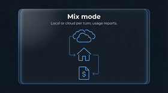
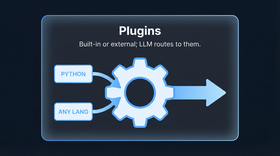
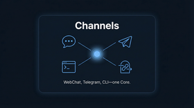
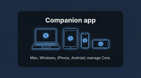
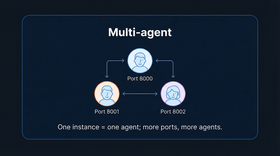
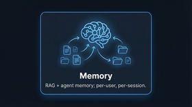
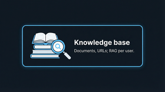
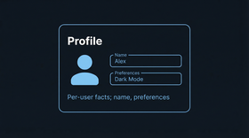

本地优先
运行在 Mac、Windows、Linux。数据留在你的机器上。
混合模式
自动在本地和云端模型间路由。节省成本，保持质量。
插件与技能
用任意语言扩展插件。从 ClawHub 安装技能。
家庭社交
私人社交网络。AI 好友、家庭成员、安全消息。
伴侣应用
Mac、Windows、iPhone、Android。聊天、管理、远程控制。
Cursor 与 ClaudeCode
从手机远程编码。开发机上的 AI 代理。
从这里开始 — 快速找到所需
如何安装
第一步：先克隆仓库，再运行安装脚本。Mac/Linux：chmod +x install.sh 后 ./install.sh，或直接 bash install.sh。Windows：使用 PowerShell 运行 .\install.ps1 或 install.bat（若提示"未数字签名"：使用 install.bat 或 powershell -ExecutionPolicy Bypass -File .\install.ps1）。脚本完成后会打开 Portal。
如何使用 HomeClaw
启动 Core，然后通过伴侣应用或渠道（WebChat、Telegram 等）聊天。
入门指南 →伴侣应用
在哪里找：仓库中的 clients/HomeClawApp/。支持 Mac、Windows、iPhone、Android。
查找与使用伴侣 →Portal
管理配置、启动 Core/渠道的 Web 界面。python -m main portal → http://127.0.0.1:18472
家庭社交网络
为您的家人创建一个私人社交网络。在家庭网络内安全地分享时刻、聊天和保持联系。
家庭网络 →远程访问
使用 Pinggy、Cloudflare Tunnel 或 Ngrok 从任何地方访问 HomeClaw。轻松设置安全的远程连接。
远程访问 →ClawHub 技能
从 ClawHub 注册表扩展 HomeClaw 技能。轻松搜索、下载、转换和安装 OpenClaw 技能。
ClawHub 技能 →Cursor 和 ClaudeCode
从手机使用 Cursor IDE 和 Claude Code CLI。打开项目、运行 AI 代理并远程查看结果。
Cursor & ClaudeCode →为什么选 HomeClaw
HomeClaw 是本地优先的 AI 助手：一次安装即一个智能体，无论通过何种方式连接，记忆、工具和插件都一致。支持 Mac、Windows、Linux（Python），并可用任意语言编写外部插件扩展。以下按影响程度排序。

1. 混合模式 — 省成本
云端 API 强大但贵；本地模型免费但有时不够用。HomeClaw 的混合模式解决这个问题：对每条用户消息，路由器只做一次选择——本地或云端——整轮对话使用同一模型。简单或私密任务走本地；复杂或不确定的走云端。每轮一个模型、自动路由，还有用量报告（在聊天或通过 API），方便查看云端用量并调整规则。默认倾向本地即可控成本，需要时再用云端。

2. 插件与技能 — 扩展能力
插件一次增加一种能力。内置插件（Python）在 plugins/；外部插件可用任意语言（Node.js、Go、Java、Python）编写，以 HTTP 服务运行。向 Core 注册后，LLM 会路由到对应插件。例如：天气、新闻、邮件、浏览器自动化。
技能让你复用 OpenClaw 风格工作流：config/skills/ 下带 SKILL.md 的文件夹。可复用 OpenClaw 技能集——将技能文件夹复制到 HomeClaw 的 config/skills/ 即可使用，无需重写。LLM 使用工具和可选的 run_skill 完成任务。

3. 渠道 — 远程访问
随时随地连接你的助手。HomeClaw 支持渠道：WebChat、Telegram、Discord、微信、WhatsApp、邮件、CLI 等。都连接同一 Core 与记忆。通过隧道（如 Cloudflare）或暴露 Core，即可从手机或其它网络聊天。一个智能体，多种连接方式。

4. 伴侣应用
HomeClaw 伴侣应用是基于 Flutter 的客户端，支持 Mac、Windows、iPhone、Android。聊天、语音、附件，以及管理 Core：在应用内编辑 core.yml 和 user.yml，无需 SSH。可单独使用或与 WebChat、CLI、Telegram 等渠道一起使用，均连接同一 Core 与记忆。

5. 多智能体
一个 HomeClaw 实例即一个智能体。需要更多智能体时，多起几个实例——不同端口、可选不同配置。无需中心编排。将伴侣应用或任意渠道指向对应端口即可。角色分离、隔离或扩展：多跑几个进程即可。

6. 记忆
HomeClaw 使用RAG 风格记忆（向量 + 关系型）与基于 Markdown 文件的记忆（如 AGENT_MEMORY.md、每日记忆文件），助手可记住并召回过往上下文。所有记忆按用户隔离。后端：Cognee（默认）或 Chroma。

7. 知识库
每用户知识库：摄入文档、URL 和手动内容用于 RAG。提供 knowledge_base_add 等工具与检索；用户发送文件时可选择自动加入。与记忆共用后端（Cognee/Chroma）。

8. 个人资料
每用户个人资料：学习到的事实（姓名、生日、偏好、家庭等）按用户存为 JSON 文件。助手可通过工具读写资料以实现个性化。在 config/core.yml 中设置 profile.enabled: true 启用。
快速链接
渠道与伴侣应用
通过 WebChat、Telegram、Discord、伴侣应用等与 HomeClaw 对话。均使用同一 Core 与记忆。远程访问可选：Tailscale、Cloudflare Tunnel、Pinggy、SSH 隧道。
联系方式
有问题或反馈？欢迎联系。
- 邮箱： shileipeng@gmail.com | shilei.peng@qq.com
- 微信： shileipeng